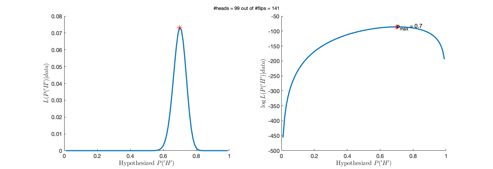

Contents
clear all; close all; clc; rng(1);
Exercise 1: Estimate the probability of heads, by observing samples
p_head_true = 0.7;
numFlips = 150;
p_head_hyp = 0.01:0.01:0.99;
[flips,numHeads] = deal(NaN(1,numFlips));
[L_p_hyp, LL_p_hyp] = deal(NaN(numFlips, length(p_head_hyp)));
[p_hat_byL, p_hat_byLL] = deal(NaN(1,numFlips));
for i = 1:numFlips
flips(i) = rand < p_head_true;
numHeads(i) = nansum(flips);
L_p_hyp(i,:) = binopdf(numHeads(i), i, p_head_hyp);
LL_p_hyp(i,:) = numHeads(i).*log(p_head_hyp) + ...
(i - numHeads(i)).*log(1 - p_head_hyp);
[~, max_idx_byL] = max(L_p_hyp(i,:));
p_hat_byL(i) = p_head_hyp(max_idx_byL);
[~, max_idx_byLL] = max(LL_p_hyp(i,:));
p_hat_byLL(i) = p_head_hyp(max_idx_byLL);
end
Exercise 1. continued
figure
for i = 1:20:numFlips
subplot(1,2,1)
plot(p_head_hyp, L_p_hyp(i,:),'lineWidth', 3); hold on;
scatter(p_hat_byL(i),max(L_p_hyp(i,:)),180,'r*'); hold on;
text(p_hat_byL(i),max(L_p_hyp(i,:))-0.1, ['p_{max} = ', ...
num2str(p_hat_byL(i))],'fontSize',15); hold off; box off;
xlim([0, 1]); xlabel(['Hypothesized ', '$P(''H'')$'],'Interpreter','latex');
ylabel('$L(P(''H'')|data)$','Interpreter','latex'); box off;
set(gca,'FontSize',15);
subplot(1,2,2)
plot(p_head_hyp, LL_p_hyp(i,:),'lineWidth', 3); hold on
scatter(p_hat_byLL(i),max(LL_p_hyp(i,:))-0.1,180,'r*'); hold on
text(p_hat_byLL(i),max(LL_p_hyp(i,:)), ['p_{max} = ', ...
num2str(p_hat_byLL(i))],'fontSize',15); hold off; box off;
xlim([0, 1]); xlabel(['Hypothesized ', '$P(''H'')$'],'Interpreter','latex');
ylabel('$\log L(P(''H'')|data)$','Interpreter','latex'); box off;
set(gca,'FontSize',15);
set(gcf, 'Units', 'Normalized', 'OuterPosition', [0, 0.04, 0.7, 0.5]);
sgtitle(['#heads = ', num2str(sum(flips(1:i))), ' out of #flips = ', num2str(i)]);
pause(0.01)
end
figure
plot(1:numFlips, numHeads./(1:numFlips), 'k.-', 'lineWidth', 2); hold on
plot([1, numFlips],[p_head_true, p_head_true], 'r--', 'lineWidth', 2); hold off
ylim([0,1]); box off; xlabel('Flip number'); ylabel('Proportion of Heads');
set(gca,'FontSize',15);
set(gcf, 'Units', 'Normalized', 'OuterPosition', [0, 0.04, 0.6, 0.45]);

Exercise 2. Estimate the posterior probability of the coin getting heads
prior_p_head_fair = normpdf(p_head_hyp, 0.5,0.1);
prior_p_head_fair = prior_p_head_fair./sum(prior_p_head_fair);
prior_p_head_biased = betapdf(p_head_hyp, 2, 5);
prior_p_head_biased = prior_p_head_biased./sum(prior_p_head_biased);
prior_p_head_uni = ones(1,length(p_head_hyp))./length(p_head_hyp);
prior_all = [prior_p_head_fair; prior_p_head_biased; prior_p_head_uni];
ttl = {'Suspect fair', 'Suspect biased', 'No idea'};
figure
for i = 1:size(prior_all,1)
subplot(1,size(prior_all,1),i)
plot(p_head_hyp, prior_all(i,:), 'lineWidth', 3); box off; grid on
title(ttl{i}); xlabel('Hypothesized P(''H'')'); ylabel('Probability');
set(gca,'FontSize',15);
end
set(gcf, 'Units', 'Normalized', 'OuterPosition', [0, 0.04, 0.8, 0.5]);
posterior_p_hyp = NaN(numFlips, size(prior_all,1), length(p_head_hyp));
L_p_hyp_1flip = NaN(numFlips, length(p_head_hyp));
for i = 1:numFlips
if i == 1; prior = prior_all;
else; prior = squeeze(posterior_p_hyp(i-1,:,:));
end
L_p_hyp_1flip(i,:) = binopdf(flips(i), 1, p_head_hyp);
for j = 1:size(prior_all,1)
posterior_p_hyp_temp = L_p_hyp_1flip(i,:).*prior(j,:);
posterior_p_hyp(i,j,:) = posterior_p_hyp_temp./sum(posterior_p_hyp_temp);
end
end
Exercise 2. continued
figure
for t = 1:numFlips
for i = 1:size(prior_all,1)
subplot(3,size(prior_all,1),i)
if t == 1; plot(p_head_hyp, prior_all(i,:), 'lineWidth', 3);
else; plot(p_head_hyp, squeeze(posterior_p_hyp(t-1,i,:)), 'lineWidth', 3); end
box off; grid on
if t == 1; title(ttl{i}); else; title(['Updated prior ', num2str(i)]);end
xlabel('Hypothesized P(''H'')'); ylabel('Probability');
set(gca,'FontSize',15);
end
subplot(3,size(prior_all,1),5)
plot(p_head_hyp, L_p_hyp_1flip(t,:), 'lineWidth', 3); box off; grid on
if flips(t); r = 'H'; else; r = 'T'; end
title(['Likelihood of P(''H''), Given coin flip = ', r]);
set(gca,'FontSize',15);
for i = 1:size(prior_all,1)
subplot(3,size(prior_all,1),6+i)
plot(p_head_hyp, squeeze(posterior_p_hyp(t,i,:)), 'lineWidth', 3);
box off; grid on
title('Posterior of P(''H'')'); xlabel('Hypothesized P(''H'')');
ylabel('Probability'); set(gca,'FontSize',15);
end
set(gcf, 'Units', 'Normalized', 'OuterPosition', [0, 0.04, 0.8,1]);
pause(0.05)
end
Exercise 3: Simulate 2IFC
t_diff = -400:50:400;
len_deltaT = length(t_diff);
numTrials = 20;
mu_delta_t = 60;
sigma_deltaT = 80;
lapse = 0.05;
P_tilde = @(mu, sig,lambda, x) lambda/2 + (1-lambda).*normcdf(x, mu, sig);
P_reportV_1st = P_tilde(mu_delta_t, sigma_deltaT, lapse, t_diff);
randNum = NaN(len_deltaT, numTrials);
numT_V1st = NaN(1, len_deltaT);
sim_prob_V1st = NaN(1, len_deltaT);
for i = 1:len_deltaT
randNum(i,:) = rand(1, numTrials);
bool_V1st = randNum(i,:) < P_reportV_1st(i);
numT_V1st(i) = sum(bool_V1st);
sim_prob_V1st(i) = numT_V1st(i)/numTrials;
end
P_reportV_1st_rep = repmat(P_reportV_1st',[1,numTrials]);
bool_V1st_ = randNum < P_reportV_1st_rep;
numT_V1st_ = sum(bool_V1st_,2);
sim_prob_V1st_ = numT_V1st_'/numTrials;
if isequal(round(sim_prob_V1st,4), round(sim_prob_V1st_,4)); disp('Check!'); end
Check!
Exercise 3. continued
figure
plot(t_diff, P_reportV_1st, 'Color',[13, 183, 200]./255, 'lineWidth', 3,...
'lineStyle','--'); hold on;
scatter(t_diff, sim_prob_V1st', 300,'filled', 'MarkerFaceColor',...
0.5.*[13, 183, 200]./255, 'MarkerEdgeAlpha', 0, 'MarkerFaceAlpha',0.5); hold on
xlim([-400, 400]); ylim([0,1]); box off;
xlabel(['$t_A - t_V$','(ms)'],'Interpreter','latex');
ylabel('Probability of reporting ''V-first'''); xticks(t_diff(1:2:end));
yticks([0,0.5,1]); legend({'Psychometric function',...
'Simulated data'},'Location','northwest'); legend boxoff
set(gca,'Fontsize',15);
set(gcf, 'Units', 'Normalized', 'OuterPosition', [0, 0.04, 0.4, 0.5]);
Exercise 4: Fitting a psychometric curve to the fake data
LogL_mu_hyp = @(p) sum(numT_V1st.*log(P_tilde(p, sigma_deltaT, lapse, t_diff))) + ...
sum((numTrials-numT_V1st).*log(1 - P_tilde(p, sigma_deltaT, lapse, t_diff)));
mu_hyp = -60:1:150;
LogL_mu = arrayfun(@(idx) LogL_mu_hyp(mu_hyp(idx)), 1:length(mu_hyp));
[max_val, max_idx] = max(LogL_mu);
mu_hat = mu_hyp(max_idx);
figure
h1 = plot(mu_hyp, LogL_mu, 'lineWidth', 3); hold on;
scatter(mu_hyp(max_idx), max_val, 180, 'r*');
h2 = plot([mu_hat, mu_hat], [min(LogL_mu), max_val],'r-');
h3 = plot([mu_delta_t, mu_delta_t], [min(LogL_mu), max_val], 'k--'); hold off
xlabel(['Hypothesized ', '$\mu$'],'Interpreter','latex');
ylabel('$\log L(\mu|data)$','Interpreter','latex'); box off; grid on
yticks(round(linspace(min(LogL_mu), max_val, 3),1));
legend([h1,h2,h3],{'$\log L(\mu|data)$', '$\hat{\mu}$', ['True ', '$\mu$']},...
'Interpreter','latex');
set(gca,'FontSize',15);
nLogL_mu_hyp = @(p) -sum(numT_V1st.*log(P_tilde(p, sigma_deltaT, lapse, t_diff))) - ...
sum((numTrials-numT_V1st).*log(1 - P_tilde(p, sigma_deltaT,...
lapse, t_diff)));
lb = -60;
ub = 150;
init = rand*(ub-lb) + lb;
options = optimoptions(@fmincon,'MaxIterations',1e5,'Display','off');
[mu_hat_, min_val] = fmincon(nLogL_mu_hyp, init,[],[],[],[],lb,ub,[],options);
disp(mu_hat_);
if abs(mu_hat - mu_hat_) < 1; disp('Checked!'); end
disp(min_val);
figure
plot(t_diff, P_reportV_1st, 'Color',[13, 183, 200]./255, 'lineWidth', 3,...
'lineStyle','--'); hold on;
plot(t_diff, P_tilde(mu_hat_, sigma_deltaT, lapse, t_diff), 'k-', 'lineWidth', 1); hold on;
scatter(t_diff, sim_prob_V1st', 300,'filled', 'MarkerFaceColor',...
0.5.*[13, 183, 200]./255, 'MarkerEdgeAlpha', 0, 'MarkerFaceAlpha',0.5); hold on
xlim([-400, 400]); ylim([0,1]); box off;
xlabel(['$t_A - t_V$','(ms)'],'Interpreter','latex');
ylabel('Probability of reporting ''V-first'''); xticks(t_diff(1:2:end));
yticks([0,0.5,1]); legend({'True psychometric function',...
'Best-fitting psychometric function', 'Simulated data'},...
'Location','northwest'); legend boxoff
set(gca,'Fontsize',15);
set(gcf, 'Units', 'Normalized', 'OuterPosition', [0, 0.04, 0.4, 0.5]);
68.9909
Checked!
94.4042
Exercise 4. continued
sigma_hyp = 10:1:160;
nLogL_mu_sigma_hyp = @(p) -sum(numT_V1st.*log(P_tilde(p(1), p(2), lapse, t_diff))) - ...
sum((numTrials-numT_V1st).*log(1 - P_tilde(p(1), p(2), lapse, t_diff)));
nLogL_hyp_mu_sig = NaN(length(mu_hyp), length(sigma_hyp));
for i = 1:length(mu_hyp)
for j = 1:length(sigma_hyp)
nLogL_hyp_mu_sig(i,j) = nLogL_mu_sigma_hyp([mu_hyp(i), sigma_hyp(j), lapse]);
end
end
[min_val, min_idx] = min(nLogL_hyp_mu_sig(:));
[row, col] = ind2sub(size(nLogL_hyp_mu_sig), min_idx);
mu_hat = mu_hyp(row);
sigma_hat = sigma_hyp(col);
lb = [-100, 10];
ub = [150, 200];
init = rand(1,length(lb)).*(ub-lb) + lb;
[estP, min_NLL] = fmincon(nLogL_mu_sigma_hyp, init,[],[],[],[],lb,ub,[],options);
disp(estP);
[MU_hyp, SIGMA_hyp] = meshgrid(mu_hyp, sigma_hyp);
figure
surf(MU_hyp, SIGMA_hyp, nLogL_hyp_mu_sig','FaceAlpha', 0.2, 'EdgeColor','none'); hold on
plot3(mu_hat, sigma_hat,min_val, 'r*');
plot3([mu_delta_t,mu_delta_t], [sigma_deltaT, sigma_deltaT],...
[min(nLogL_hyp_mu_sig(:))-10, max(nLogL_hyp_mu_sig(:))+10],'k-');
plot3(mu_delta_t, sigma_deltaT, min(nLogL_hyp_mu_sig(:))-10, 'k+'); hold off
xlabel(['Hypothesized ', '$\mu$'],'Interpreter','latex');
ylabel(['Hypothesized ', '$\sigma$'],'Interpreter','latex');
zlabel('$-\log L(\mu,\sigma|data)$','Interpreter','latex'); box off;
zlim([min(nLogL_hyp_mu_sig(:))-10, max(nLogL_hyp_mu_sig(:))+10]);
set(gca,'FontSize',15);
figure
plot(t_diff, P_reportV_1st, 'Color',[13, 183, 200]./255, 'lineWidth', 3,...
'lineStyle','--'); hold on;
plot(t_diff, P_tilde(estP(1), estP(2), lapse, t_diff), 'k-', 'lineWidth', 1); hold on;
scatter(t_diff, sim_prob_V1st', 300,'filled', 'MarkerFaceColor',...
0.5.*[13, 183, 200]./255, 'MarkerEdgeAlpha', 0, 'MarkerFaceAlpha',0.5); hold on
xlim([-400, 400]); ylim([0,1]); box off;
xlabel(['$t_A - t_V$','(ms)'],'Interpreter','latex');
ylabel('Probability of reporting ''V-first'''); xticks(t_diff(1:2:end));
yticks([0,0.5,1]); legend({'True psychometric function',...
'Best-fitting psychometric function', 'Simulated data'},...
'Location','northwest'); legend boxoff
set(gca,'Fontsize',15);
set(gcf, 'Units', 'Normalized', 'OuterPosition', [0, 0.04, 0.4, 0.5]);
69.0413 77.6578
Exercise 5: Bootstrapping
numBtst = 1e3;
estP_btst = NaN(numBtst, 2);
minNLL = NaN(numBtst, 1);
for i = 1:numBtst
[~, nT_V1st_btst] = bootstrap_solutions(t_diff, bool_V1st_, numTrials);
nLL = @(p) -sum(nT_V1st_btst*log(P_tilde(p(1), p(2), lapse, t_diff))') -...
sum((numTrials - nT_V1st_btst)*log(1-P_tilde(p(1), p(2), lapse, t_diff))');
[estP_btst(i,:), minNLL(i)] = fmincon(nLL,init,[],[],[],[],lb,ub,[],options);
end
mu_sorted = sort(estP_btst(:,1));
CI_ub_mu = mu_sorted(ceil(numBtst*0.975));
CI_lb_mu = mu_sorted(floor(numBtst*0.025));
sigma_sorted = sort(estP_btst(:,2));
CI_ub_sigma = sigma_sorted(ceil(numBtst*0.975));
CI_lb_sigma = sigma_sorted(floor(numBtst*0.025));
Exercise 5. continued
figure
subplot(1,2,1)
h1= histogram(estP_btst(:,1),'FaceColor', 'r', 'FaceAlpha', 0.3,'EdgeColor','r'); hold on
h2=plot([estP(1), estP(1)], [0, numBtst*0.3],'r-', 'lineWidth',3); hold on;
h3=plot([CI_lb_mu, CI_lb_mu], [0, numBtst*0.3],'r--', 'lineWidth',3); hold on;
plot([CI_ub_mu, CI_ub_mu], [0, numBtst*0.3],'r--', 'lineWidth',3); hold on;
h4=plot([mu_delta_t, mu_delta_t], [0, numBtst*0.3],'k--', 'lineWidth',3); hold off
xlim([min(estP_btst(:,1)-5), max(estP_btst(:,1)+5)]); ylim([0, numBtst*0.3]);
xlabel('$\mu$', 'Interpreter', 'latex'); ylabel('Counts');box off;
legend([h1,h2,h3,h4],{'estimates by bootstrapped dataset', ...
'estimates by the orignal dataset', '95% bootstrap confidence interval',...
'true value used for generating the data'},'Location', 'northwest');
set(gca,'FontSize',15);
subplot(1,2,2)
histogram(estP_btst(:,2),'FaceColor', 'b', 'FaceAlpha', 0.3,'EdgeColor','b'); hold on
plot([estP(2), estP(2)], [0, numBtst*0.3],'b-', 'lineWidth',3); hold on
plot([CI_lb_sigma, CI_lb_sigma], [0, numBtst*0.3],'b--', 'lineWidth',3); hold on;
plot([CI_ub_sigma, CI_ub_sigma], [0, numBtst*0.3],'b--', 'lineWidth',3); hold on;
plot([sigma_deltaT, sigma_deltaT], [0, numBtst*0.3],'k--', 'lineWidth',3); hold off
xlim([min(estP_btst(:,2)-5), max(estP_btst(:,2)+5)]); ylim([0, numBtst*0.3]);
xlabel('$\sigma$', 'Interpreter', 'latex'); ylabel('Counts');box off;
set(gca,'FontSize',15);
set(gcf, 'Units', 'Normalized', 'OuterPosition', [0, 0.04, 0.8, 0.55]);

Fun demo: SDT
mu_N_vec = [3, 3, 3, 3];
mu_NS_vec = [3.4, 3.8, 4.2, 4.6];
sigma_vec = 0.55;
x = 0:0.1:8;
ylim_ub = 0.1;
d_prime = GenerateROC(mu_N_vec, mu_NS_vec, sigma_vec, x, ylim_ub);